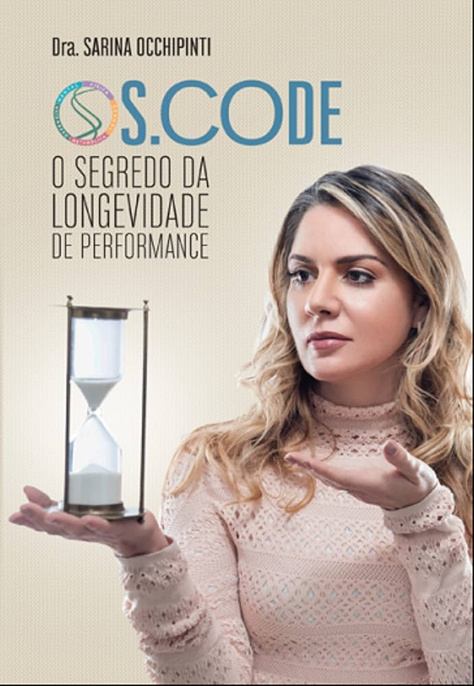

Neurocomportamento · Obesidade · Hormônios · Longevidade
Dra. Sarina Occhipinti
31 anos de medicina, 2 RQEs, 15 anos como mentora de médicos, bacharel e mestre em Direito.
Obesidade, hormônios e longevidade tratados na raiz. Do consultório da Dra. Sarina para mais de 4.000 médicos formados e mais de 10.000 pacientes tratados.
/ Antes dos produtos, a fonte
Por que aprender com a Dra. Sarina
Médica há 31 anos e advogada com mestrado em Direito. Pioneira no estudo do cortisol no Brasil, criadora do conceito de “Cura da Obesidade” e do método Neuro-obesogênese, validado pela The Lancet 2025. Aos 35 anos entrou na menopausa, eliminou 20kg e mantém há mais de 12 anos, sem rebote. Cada coisa que ensina e clinica, viveu primeiro.
%20-177.jpg)
/ O resultado nos médicos formados
Tratam a raiz e sustentam o resultado do paciente.
Resolvem o paciente adulto por inteiro, sem encaminhar para dois ou três especialistas.
Constroem posicionamento próprio e se tornam referência na sua cidade, em transição para o particular.
Fazem com que seus pacientes adiram ao plano de tratamento.
Aprendem a Neuro-obesogênese para transformar a vida de seus pacientes e “curá-los”, tratando da mente e do metabolismo.

/ Publicações
S.CODE, O Segredo da Longevidade de Performance
O livro da Dra. Sarina Occhipinti sobre longevidade de performance: simples e objetivo, explica como hábitos simples de vida transformam o seu bem-estar e prolongam sua vida nas performances física, sexual, metabólica, defensiva e mental tratadas como um sistema único. A base de raciocínio para o público geral que sustenta a escola SariDoctors e o Método Sari, agora em livro.
SariDoctors. A escola de médicos que transformam vidas
A canetinha trata só o sintoma. O médico que só prescreve caneta emagrece o paciente, mas ninguém se “cura”. A SariDoctors forma o médico que domina o conteúdo e seu paciente através dos conhecimentos em neurocomportamento, hormônio, metabolismo e longevidade.
/ O método
Neurocomportamental
A adesão começa na cabeça do paciente. Técnicas de mudança de comportamento que fazem o tratamento ser seguido.
Hormonal
Regulação de peso e comportamento alimentar. Prescrição com segurança clínica e jurídica.
Metabólico
Queima calórica, proteção de massa muscular, o corpo que volta a funcionar.
/ Sua jornada na escola
Formação
Comece pela Pós-Graduação ou por uma Imersão presencial.
Prática
A Pós inclui aula prática presencial. As Imersões entregam método aplicado, templates e mentorias de implementação.
Aprofundamento
A Imersão Neurocomportamental é a formação premium da escola, exclusiva para quem já passou por Obesidade ou Hormônios.
Pós-Graduação em Medicina da Longevidade e Performance
A única pós com Raciocínio Clínico Integrativo do Brasil.
Seu paciente adulto não quer um médico que encaminha para dois ou três especialistas. Ele quer um médico que domina longevidade, medicina regenerativa, nutrologia e suplementação, e que não treme nas bases quando aparece pressão alta, depressão ou risco cardiovascular. Essa pós forma esse médico.
%20-225.jpg)
/ As 5 Performances
A espinha do currículo.
Performance Mental
Cognição, sono, humor e energia do paciente 40+.
Performance Física
Massa muscular, sarcopenia, força e capacidade funcional como marcadores de longevidade.
Performance Sexual
Saúde hormonal e vitalidade de homens e mulheres, a parte mais extensa do currículo junto com a metabólica.
Performance Metabólica
Emagrecimento e obesidade, microbioma, resistência insulínica e bioquímica aplicada. O coração do programa.
Performance Defensiva
Imunidade, prevenção e gestão de risco do paciente maduro.
/ O currículo por dentro
Da base às 5 Performances. Passando por Medicina Regenerativa, Posicionamento e Marketing Médico e Trabalho de Conclusão de Curso.
Rigor acadêmico. Cada módulo com plano de ensino formal, carga teórica e prática.
Temas avançados. Peptídeos, epigenética do envelhecimento, microbioma e terapias hormonais seguras.
/ Diferenciais
Componente presencial
A aula prática do módulo de Emagrecimento e Obesidade acontece presencialmente, junto à Imersão em Obesidade, com a Dra. Sarina.
Marketing Médico no currículo
A pós ensina o médico a se posicionar e valorizar a consulta, não só a prescrever.
Corpo docente liderado pela Dra. Sarina
Pioneira no estudo do cortisol no Brasil.
Por que o paciente 40+
A maior parte da renda do país está com quem tem mais de 45 anos. É o paciente que chega no horário, segue a conduta e permanece no tratamento. E ele não procura tratamento de doença. Procura vitalidade, performance e longevidade integradas em um só médico.
Método Sari. A diferença entre emagrecer e se “curar”.
O mais completo tratamento de emagrecimento personalizado. Criado pela Dra. Sarina Occhipinti. Mais de 9 mil mulheres emagreceram de forma definitiva, em 15 países. 100% online, um ano de acompanhamento.
_-87.jpg)
Por que as dietas devolvem o peso
Quem faz dieta e perde músculo queima menos gordura, e o metabolismo desacelera. É o efeito sanfona. No Método Sari, a sua massa muscular é protegida durante todo o programa, e o plano é feito para a sua individualidade metabólica. Dieta que você abandona não emagrece ninguém. Aqui não existe protocolo de prateleira.
A raiz está na cabeça, nos hormônios e no metabolismo
Sono ruim, estresse e ansiedade são o que mais sabota o emagrecimento. É onde a maioria dos tratamentos não chega. O coração do Método é o tratamento neurocomportamental, o que a sua cabeça faz com o seu corpo. Médico, nutrição, treino e neurocomportamental no mesmo lugar.
/ O que você recebe
{{ e.h }}
{{ e.d }}
/ Perguntas frequentes
Imersões Presenciais SariDoctors
Intensivos presenciais com a Dra. Sarina. Alphaville, São Paulo.
%20-76.jpg)
Imersão em Obesidade
O método Neuro-obesogênese, validado pela The Lancet 2025: neurocomportamento, hormônios e metabolismo em 3 dias de prática. 36 horas presenciais, 3 certificados, apostila, templates de anamnese e precificação, contratos prontos e 3 mentorias online de implementação.
Imersão em Hormônios e Implantes
Prescrição hormonal com segurança clínica e jurídica em 5 pilares: neurocomportamental, hormônios femininos e masculinos, estética funcional, casos complexos e implante na prática.
Imersão Neurocomportamental
A formação premium da escola. 4 dias, turma reduzida, exclusiva para quem já fez Obesidade ou Hormônios.
%20-223.jpg)
/ Sobre a Dra. Sarina
Sou médica há 31 anos e advogada com mestrado em Direito. Fui pioneira no estudo do cortisol no Brasil e criei o conceito de “Cura da Obesidade”. Aos 35 anos entrei na menopausa, tirei as mamas e os ovários por risco genético de câncer, e sempre fui obesa. Eliminei 20kg e mantenho há mais de 12 anos, sem rebote. Cada coisa que eu ensino, eu vivi primeiro.